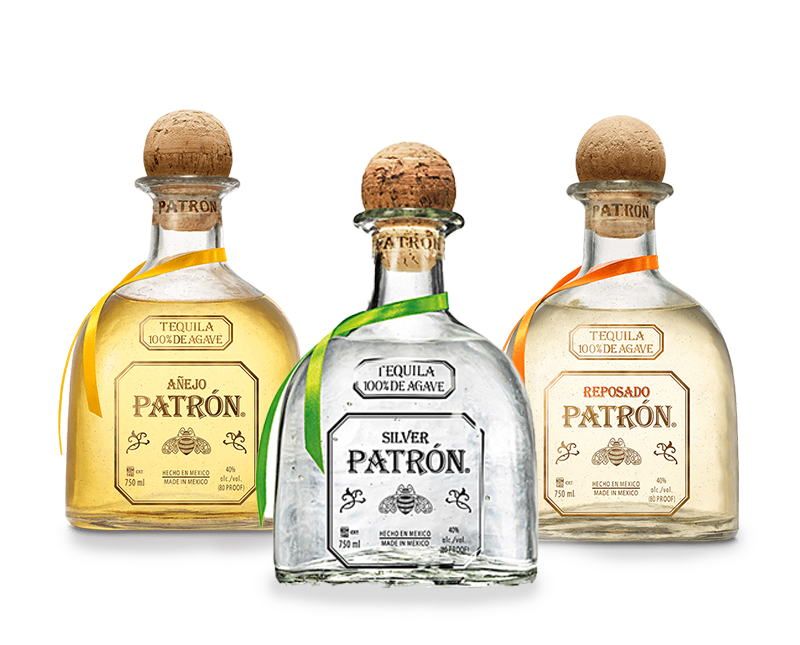
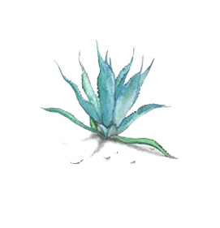

TEQUILA PATRÓN
Handmade in small batches to be smooth, sweet and easily mixable.
PERFECTION, FROM THE INSIDE-OUT
The tequila itself may be the most obvious element in our craft story, but in Mexico, glass artisans measure and mold our perfectly imperfect Patrón Tequila bottles.
AÑEJO Oak aged for over 12 months to produce a tequila perfect for sipping.
SILVER The perfect white spirit made from the finest Weber Blue Agave.
REPOSADO Aged at least two months for smooth taste with a hint of oak flavor.
